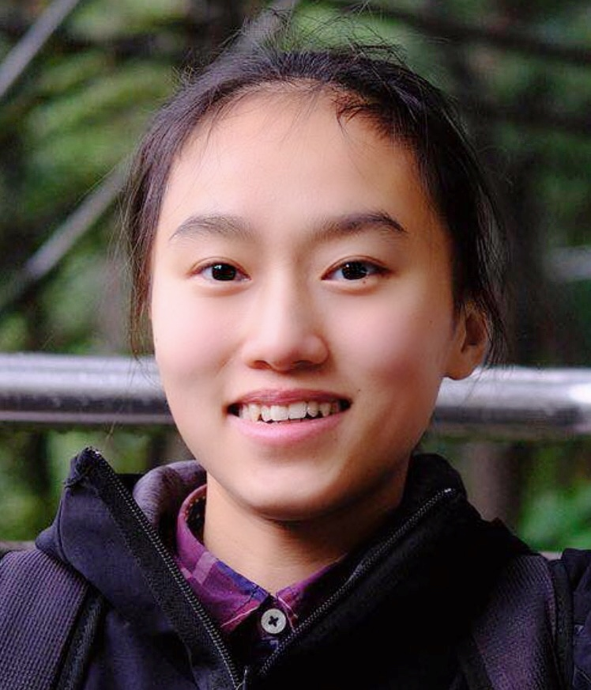
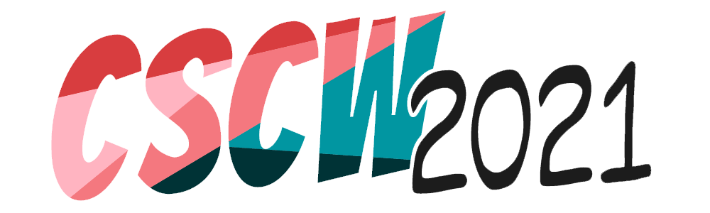

|
I am a new Ph.D. student under Prof. Christian Theobalt in GVV group at
Max Planck Institute for Informatics, Germany.
I also work closely with Prof. Wolfgang Stuerzlinger (Simon Fraser University, Canada), Prof. Christof Lutteroth (University of Bath, UK) on our series of OR-Constraint (ORC) Adaptive GUI layout projects. Before joining MPI, I got my master's degree in Computer Graphics under Prof. Matthias Zwicker from the University of Maryland, College Park, USA. and bachelor's degree in Computer Science Specialist with a Mathematics Major under Prof. Gerald Penn from the University of Toronto, Canada. All the courses I have taken at the University of Toronto can be found here. I am from Nanjing, a very beautiful city in the east of China, which has served as the capital of China for ten times in the history of China. |
 Photo taken in Vancouver. |

|
Yue Jiang, Wolfgang Stuerzlinger, Christof Lutteroth the ACM Conference on Human Factors in Computing Systems (CHI), 2021 |
|
|
Karan Ahuja, Yue Jiang, Mayank Goel, Chris Harrison the ACM Conference on Human Factors in Computing Systems (CHI), 2021 |
|  |
Zhicong Lu, Yue Jiang, Chenxinran Shen, Margaret C Jack, Daniel Wigdor, Mor Naaman, the ACM Computer-Supported Cooperative Work and Social Computing (CSCW), 2021 |

|
Yue Jiang, Dantong Ji, Zhizhong Han, Matthias Zwicker IEEE Conference on Computer Vision and Pattern Recognition (CVPR), 2020 (Oral Top 5%) |

|
Yue Jiang, Wolfgang Stuerzlinger, Matthias Zwicker, Christof Lutteroth the ACM Conference on Human Factors in Computing Systems (CHI), 2020 |
|
|
Zhicong Lu, Yue Jiang, Cheng Lu, Mor Naaman, Daniel Wigdor the ACM Conference on Human Factors in Computing Systems (CHI), 2020 |
|
|
Yue Jiang, Ruofei Du, Christof Lutteroth, Wolfgang Stuerzlinger the ACM Conference on Human Factors in Computing Systems (CHI), 2019 |
Education
|
Professional Experience
|
Academic Service (Program Committee)
|
Teaching Experience
|
Selected Honours
|
My Name
In China, "the Moon over the river" is widely used in peoms to express the emotion that although we cannot live together with our family, we can still share the same Moon at night and the Moon over the river can always send the best wishes to the ones we love! I hope all the families can have more chance to reunite. If it cannot be realized, I hope the Moon over the river can really help us send the best wishes. |
Acknowledge
Prof. Faith Ellen is my idol. She encouraged me to speak English as I almost could not speak English when I went to Canada and let me fall in love with data structure and computer theory even though I am not smart. She taught me that it is much more important to be persistent than intelligent. Prof. Gerald Penn is my undergraduate advisor in mathematical linguistics group. He has some illusion about me that he often told other people that he would rank me as the best undergraduate student he has ever worked with. I don't deserve it, but really thank him for accepting me. Prof. Wolfgang Stuerzlinger and Prof. Christof Lutteroth are my advisors on HCI projects who provided a lot of support and encouragement. I really appreciate that Wolfgang let me work on the fantastic HCI projects without ever having seen me until almost two years later. The second project I worked on with them is my favouriate project I have ever done in my life. I enjoy both the topic and the experience working with them. I got a lot of support from them. I felt so happy everyday when I worked on that project. I got touched by how hardworking they are and how much effect they devoted to me as just a remote student. I was a data structure TA under supervision of Prof. Sam Toueg and Prof. Francois Pitt. I appreciate them giving me the chance to teach students data structure proofs for two hours every week. I broke all the chalks in the classroom during my first-time teaching since I was too nervous. I still remember Sam and I worked past midnight to do the grading. |
Template: this. |